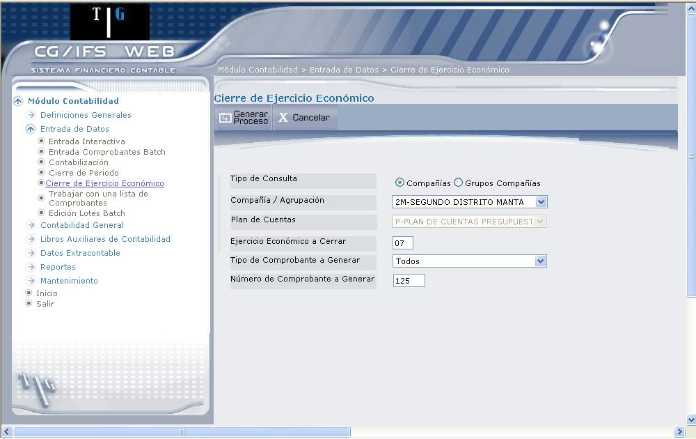

Cierre de Ejercicios Económicos
Esta opción permite efectuar las operaciones de traspaso de saldos de unas cuentas a otras y puede ejecutarse cuantas veces desee, siempre que el proceso anterior esté finalizado.
Los periodos previos al cierre no tienen por qué estar cerrados para ejecutar este proceso.
El proceso de Cierre Económico genera un comprobante que contiene todos los movimientos de cierre y lo graba en el archivo de entrada batch. Los saldos de cierre se calculan acumulando los movimientos de todos los periodos hasta el definido como “Periodo de cierre del año” inclusive.
Los movimientos de cierre solo se generan para las Cuentas de Mayor que tengan definidos una “Cuenta de cierre” (las cuentas que tengan en blanco este campo no se verán afectadas por el cierre anual). El contenido de cada movimiento que se genera, depende de los parámetros de las cuentas ‘emisora’ y ‘receptora’ según los casos siguientes:
Si la cuenta a cerrar trabaja sin Moneda Extranjera:
- Sin importar si la cuenta de cierre trabaja o no con Moneda Extranjera, este campo no aparece en ninguno de los dos movimientos. Se genera una única contrapartida en de Cierre (normalmente Pérdidas y Ganancias).
Si la cuenta a cerrar trabaja con Moneda Extranjera:
- Y la cuenta de cierre no trabaja con Moneda Extranjera, el movimiento que la afecta no contendrá saldo con Moneda Extranjera, aunque el movimiento que cancela de Mayor, lo hará en ambas monedas. Se genera una única contrapartida en de Cierre (normalmente Pérdidas y Ganancias)
- Y la cuenta de cierre también trabaja con Moneda Extranjera, ambos movimientos contendrán las dos monedas y los importes serán iguales, aunque trabajen con diferentes tipos de moneda. Se generan tantas contrapartidas en la cuenta de cierre como cuentas de mayor se cierren.
Si la cuenta a cerrar trabaja sin Auxiliar:
- Y la cuenta de cierre no trabaja con Auxiliar, se genera un movimiento para de Mayor a cerrar, se genera una única contrapartida en de Cierre (normalmente Pérdidas y Ganancias).
- Y la cuenta de cierre trabaja con Auxiliar sin documento, se genera un movimiento por cada Cuenta de Mayor y otro para la cuenta de cierre con el código de Auxiliar 99999999. Se generan tantas contrapartidas en de Cierre como cuentas de mayor se cierren.
- Y la cuenta de cierre trabaja con Auxiliar con documento, se genera un movimiento por cada Cuenta de Mayor y otro para la cuenta de cierre con el código de auxiliar 99999999 y número CE-0000000. Se generan tantas contrapartidas en la cuenta de cierre como cuentas de mayor se cierren.
Si la cuenta a cerrar trabaja con Auxiliar sin documento:
- Y la cuenta de cierre no trabaja con Auxiliar, se genera un movimiento por cada Cuenta de Auxiliar dentro de de Mayor y otro para la cuenta de cierre sin Cuenta de Auxiliar. Se genera una única contrapartida en de Cierre (normalmente Pérdidas y Ganancias).
- Y la cuenta de cierre trabaja con Auxiliar sin documento, se genera un movimiento por cada Cuenta de Auxiliar dentro de de Mayor y otro para la cuenta de cierre con la misma Cuenta de Auxiliar. Se generan tantas contrapartidas en la cuenta de cierre como cuentas de mayor de cierre, si tiene el mismo Tipo de Auxiliar; de no ser así, se genera un asiento con de Auxiliar 99999999.
- Y la cuenta de cierre trabaja con Auxiliar con documento, se genera un movimiento por cada Cuenta de Auxiliar dentro de de Mayor y otro para la cuenta de cierre con la misma Cuenta de Auxiliar y número CE-0000000. Se genera tantas contrapartidas en la cuenta de cierre como cuentas de mayor se cierren, si tiene el mismo Tipo de Auxiliar; de no ser así, se genera un asiento con de Auxiliar 99999999.
Si la cuenta a cerrar trabaja con Auxiliar con documento:
- Y la cuenta de cierre no trabaja con Auxiliar, se genera un movimiento para cada documento no cancelado de cada Cuenta de Auxiliar dentro de de Mayor y otro para la cuenta de cierre sin Cuenta de Auxiliar ni número de documento. Se genera una única contrapartida en de Cierre (normalmente Pérdidas y Ganancias).
- Y la cuenta de cierre trabaja con Auxiliar sin documento, se genera un movimiento para cada documento no cancelado dentro de cada Cuenta de Auxiliar dentro de de Mayor y otro para la cuenta de cierre, conservando el código de Cuenta de Auxiliar pero sin número de documento. Se generan tantas contrapartidas en la cuenta de cierre como cuentas de mayor se cierren, si tiene el mismo Tipo de Auxiliar; de no ser así, se genera un asiento con de Auxiliar 99999999.
- Y la cuenta de cierre trabaja con Auxiliar con documento, se genera un movimiento por cada documento no cancelado de cada Cuenta de Auxiliar dentro de de Mayor y otro para la cuenta de cierre conservando el código de Cuenta de Auxiliar y el número de documento. Se generan tantas contrapartidas en la cuenta de cierre como cuentas de mayor se cierren.
Los registros del comprobante de cierre se cargan automáticamente al archivo de entrada batch, y posterior a la adición del comprobante, desde la entrada interactiva, se posibilita al usuario su modificación antes de ser contabilizados.
Autorizaciones
El usuario que efectúe el Cierre del Ejercicio Económico debe tener asignadas las siguientes autorizaciones:
- Debe estar autorizado al cierre de la clase de elemento Grupo de Compañías o de la clase de elemento Compañías, según sea el caso.
- Requiere que esté autorizado a las autorizaciones propias de la opción ENTRADA COMPROBANTES BATCH, para poder integrar los movimientos generados durante el cierre económico, con los movimientos de curso normal.
Al ingresar a esta opción se despliega la pantalla que muestra 1.24, donde se podrán seleccionar los parámetros de cierre, mismos que se describen a continuación:

Figura 1. Cierre de Ejercicio Económico
Tipo de Consulta:
Seleccione si va a realizar el cierre de una Compañías o Grupo de Compañías, marcando el casillero de selección correspondiente. Según lo que seleccione se activa el campo “Plan de Cuentas”
Compañía / Agrupación:
Seleccione la compañía o grupo de compañías, donde se aplicará el cierre del ejercicio económico.
Plan de Cuentas:
Seleccione el plan de cuentas, para el que se desea efectuar el cierre del ejercicio económico.
Ejercicio Económico a Cerrar:
Digite el ejercicio económico que se desea cerrar. El proceso genera un comprobante cuyo periodo corresponde al definido en el maestro de compañías (Periodo en que cierra el ejercicio). El periodo de cierre y/o el siguiente a éste deben figurar en de Calendarios Contables.
Tipo de Comprobante a Generar:
Seleccione el tipo de comprobante que se va a generar. Dicho comprobante debe estar activo y definido para entrada batch.
Si la compañía cierra su ejercicio en un periodo normal, donde hay otros comprobantes contabilizados, se recomienda usar el tipo de Comprobante 99 o definir uno pensado exclusivamente para el cierre, a fin de separar claramente esta operación de las demás. Ello evita también la posibilidad que se haya entrado ya otro comprobante con la misma clave, en cuyo caso éste sería rechazado.
Número de Comprobante a Generar:
Digite el número de comprobante que desea generar. La combinación entre el número de comprobante y el tipo de comprobante no debe ser igual al de otro comprobante introducido previamente.
Por último presione el botón Generar Proceso o la tecla ENTER.
BOTONES
Si la cuenta de Mayor trabaja con Tipo de Auxiliar, el programa genera un movimiento por cada Cuenta de Auxiliar que tiene saldo diferente de cero para esa Cuenta de Mayor en concreto.
El Comprobante creado es adicionado a los archivos de CG/Web mediante de Comprobantes en batch, generándose un lote por el prefijo “DJ”.
En el caso de que se haya solicitado previamente otro cierre y el lote correspondiente esté todavía en la cola de lotes a procesar, no puede ejecutarse ningún otro cierre hasta que el anterior se haya completado.
Created with the Personal Edition of HelpNDoc: Generate Kindle eBooks with ease